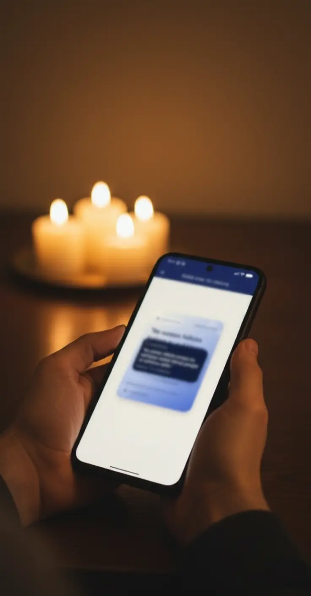
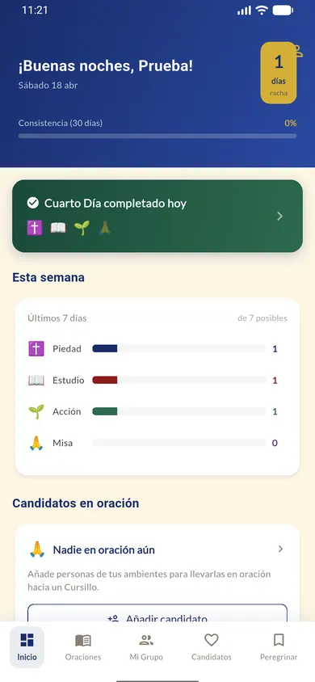

Oración del día
Ofrecimiento del día
Señor, te ofrezco este día: mis pensamientos, mis palabras y mis obras. Que todo lo que haga sea para tu gloria y para el bien de quienes me rodean. Amén.
Más oraciones en la BibliotecaPeregrino Edición del Cuarto Día
Peregrino reúne oración, vida de gracia, amistad y recursos en un espacio sereno, pensado para ayudarte a volver cada día a lo esencial.

Hoy
Oración del día
Señor, te ofrezco este día: mis pensamientos, mis palabras y mis obras. Que todo lo que haga sea para tu gloria y para el bien de quienes me rodean. Amén.
Más oraciones en la BibliotecaRezar en grupo
Sigue en directo la oración que guía otra persona. Sin instalar nada y sin registrarte; también en iPhone.
Rincón de la Luz
Deja una intención, regala una oración o recibe una luz para tu día.
Entrar al RincónEn este número
Piedad, Estudio y Acción: la forma en que el Cursillo enseña a vivir el Cuarto Día es también la forma de recorrer esta web.
Piedad
Rezar cada día
Estudio
Conocer y formarse
Acción
Llevar a otros
Reportaje
Peregrino ordena tu día de fe sin ruido ni distracciones, y te acompaña cuando más lo necesitas.

La tecnología debe estar al servicio de la persona. Nunca la persona al servicio de la tecnología.
Para parroquias y Ultreyas
Con el Plan Comunidad regaláis el plan Bordón a todos vuestros miembros: un pago único y un enlace para cada persona.
Conocer el Plan ComunidadPlanes personales
Una ayuda pequeña para un camino que dura toda la vida.
Descargar Peregrino¡De Colores! 🌈